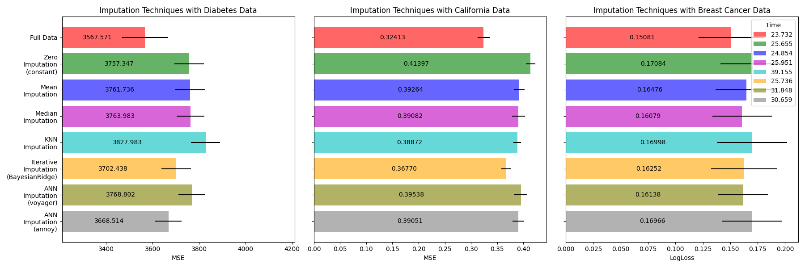

annoy impute with examples#
Examples related to the ANNImputer class
with a scikit-learn regressor (e.g., LinearRegression) instance.
# Authors: The scikit-plots developers
# SPDX-License-Identifier: BSD-3-Clause
Download the data and make missing values sets#
First we download the two datasets. Diabetes dataset is shipped with scikit-learn. It has 442 entries, each with 10 features. California housing dataset is much larger with 20640 entries and 8 features. It needs to be downloaded. We will only use the first 300 entries for the sake of speeding up the calculations but feel free to use the whole dataset.
https://www.geeksforgeeks.org/machine-learning/ml-credit-card-fraud-detection/ https://media.geeksforgeeks.org/wp-content/uploads/20240904104950/creditcard.csv df = pd.read_csv(”https://media.geeksforgeeks.org/wp-content/uploads/20240904104950/creditcard.csv”) df.head()
import os
import time
from pathlib import Path
import numpy as np; np.random.seed(0) # reproducibility
import pandas as pd
from sklearn.datasets import make_classification, make_regression
from sklearn.datasets import (
load_breast_cancer as data_2_classes,
load_iris as data_3_classes,
load_digits as data_10_classes,
)
from sklearn.datasets import fetch_california_housing, load_diabetes
from sklearn.model_selection import train_test_split
from sklearn.ensemble import RandomForestRegressor, RandomForestClassifier
# To use the experimental IterativeImputer, we need to explicitly ask for it:
from sklearn.experimental import enable_iterative_imputer # noqa: F401
from sklearn.impute import IterativeImputer, KNNImputer, SimpleImputer
from sklearn.model_selection import cross_val_score
from sklearn.pipeline import make_pipeline
from sklearn.preprocessing import MaxAbsScaler, RobustScaler, StandardScaler
import inspect
import joblib
from pathlib import Path
def get_current_script_dir() -> Path:
"""
Returns the directory of the current script in a robust way.
Returns
-------
Path
Absolute directory path.
Raises
------
RuntimeError
If location cannot be determined.
"""
# Case 1: normal Python execution
if "__file__" in globals():
return Path(__file__).resolve().parent
# Case 2: fallback for Sphinx-gallery / exec environments
frame = inspect.currentframe()
if frame is not None:
file = inspect.getfile(frame)
return Path(file).resolve().parent
raise RuntimeError("Cannot determine script directory.")
BASE_DIR = get_current_script_dir()
# joblib.dump(fetch_california_housing(return_X_y=True), "fetch_california_housing.joblib")
joblib.load(BASE_DIR / "fetch_california_housing.joblib")
(array([[ 8.3252 , 41. , 6.98412698, ..., 2.55555556,
37.88 , -122.23 ],
[ 8.3014 , 21. , 6.23813708, ..., 2.10984183,
37.86 , -122.22 ],
[ 7.2574 , 52. , 8.28813559, ..., 2.80225989,
37.85 , -122.24 ],
...,
[ 1.7 , 17. , 5.20554273, ..., 2.3256351 ,
39.43 , -121.22 ],
[ 1.8672 , 18. , 5.32951289, ..., 2.12320917,
39.43 , -121.32 ],
[ 2.3886 , 16. , 5.25471698, ..., 2.61698113,
39.37 , -121.24 ]], shape=(20640, 8)), array([4.526, 3.585, 3.521, ..., 0.923, 0.847, 0.894], shape=(20640,)))
def add_missing_values(X_full, y_full, rng=np.random.RandomState(0)):
n_samples, n_features = X_full.shape
# Add missing values in 75% of the lines
missing_rate = 0.75
n_missing_samples = int(n_samples * missing_rate)
missing_samples = np.zeros(n_samples, dtype=bool)
missing_samples[:n_missing_samples] = True
rng.shuffle(missing_samples)
missing_features = rng.randint(0, n_features, n_missing_samples)
X_missing = X_full.copy()
X_missing[missing_samples, missing_features] = np.nan
y_missing = y_full.copy()
return X_missing, y_missing
Xdi_train, Xdi_val, ydi_train, ydi_val = train_test_split(
*load_diabetes(return_X_y=True),
test_size=0.25, random_state=42
)
Xca_train, Xca_val, yca_train, yca_val = train_test_split(
# *fetch_california_housing(return_X_y=True),
*joblib.load("fetch_california_housing.joblib"),
test_size=0.25, random_state=42
)
Xbc_train, Xbc_val, ybc_train, ybc_val = train_test_split(
*data_2_classes(return_X_y=True),
test_size=0.25, random_state=42,
stratify=data_2_classes(return_X_y=True)[1] # (data, target)
)
Xdi_train_miss, ydi_train_miss = add_missing_values(Xdi_train, ydi_train)
Xca_train_miss, yca_train_miss = add_missing_values(Xca_train, yca_train)
Xbc_train_miss, ybc_train_miss = add_missing_values(Xbc_train, ybc_train)
Xdi_val_miss, ydi_val_miss = add_missing_values(Xdi_val, ydi_val)
Xca_val_miss, yca_val_miss = add_missing_values(Xca_val, yca_val)
Xbc_val_miss, ybc_val_miss = add_missing_values(Xbc_val, ybc_val)
N_SPLITS = 4
def get_score(Xt, Xv, yt, yv, imputer=None, regresion=True):
if regresion:
estimator = RandomForestRegressor(random_state=42)
scoring="neg_mean_squared_error"
else:
estimator = RandomForestClassifier(random_state=42, max_depth=6, class_weight='balanced')
scoring="neg_log_loss"
if imputer is not None:
Xt = imputer.fit_transform(Xt, yt)
Xv = imputer.transform(Xv)
estimator.fit(Xt, yt)
scores = cross_val_score(
estimator,
Xv, yv, scoring=scoring, cv=N_SPLITS
)
return scores.mean(), scores.std()
n_size = 8
x_labels = np.zeros(n_size, dtype=object)
mses_diabetes = np.zeros(n_size)
stds_diabetes = np.zeros(n_size)
mses_california = np.zeros(n_size)
stds_california = np.zeros(n_size)
mses_train = np.zeros(n_size)
stds_train = np.zeros(n_size)
time_data = np.zeros(n_size)
Estimate the score#
First, we want to estimate the score on the original data:
t0 = time.time()
mses_diabetes[0], stds_diabetes[0] = get_score(Xdi_train, Xdi_val, ydi_train, ydi_val)
mses_california[0], stds_california[0] = get_score(Xca_train, Xca_val, yca_train, yca_val)
mses_train[0], stds_train[0] = get_score(Xbc_train, Xbc_val, ybc_train, ybc_val, regresion=False)
x_labels[0] = "Full Data"
T = time.time() - t0
print(T)
time_data[0] = T
23.73151707649231
Replace missing values by 0#
Now we will estimate the score on the data where the missing values are replaced by 0:
t0 = time.time()
imputer = SimpleImputer(strategy="constant", fill_value=0, add_indicator=True)
mses_diabetes[1], stds_diabetes[1] = get_score(
Xdi_train_miss, Xdi_val_miss, ydi_train_miss, ydi_val_miss, imputer
)
mses_california[1], stds_california[1] = get_score(
Xca_train_miss, Xca_val_miss, yca_train_miss, yca_val_miss, imputer
)
mses_train[1], stds_train[1] = get_score(
Xbc_train_miss, Xbc_val_miss, ybc_train_miss, ybc_val_miss, imputer,
regresion=False
)
x_labels[1] = "Zero\nImputation\n(constant)"
T = time.time() - t0
print(T)
time_data[1] = T
25.655496835708618
Impute missing values with mean#
t0 = time.time()
imputer = SimpleImputer(strategy="mean", add_indicator=True)
mses_diabetes[2], stds_diabetes[2] = get_score(
Xdi_train_miss, Xdi_val_miss, ydi_train_miss, ydi_val_miss, imputer
)
mses_california[2], stds_california[2] = get_score(
Xca_train_miss, Xca_val_miss, yca_train_miss, yca_val_miss, imputer
)
mses_train[2], stds_train[2] = get_score(
Xbc_train_miss, Xbc_val_miss, ybc_train_miss, ybc_val_miss, imputer,
regresion=False
)
x_labels[2] = "Mean\nImputation"
T = time.time() - t0
print(T)
time_data[2] = T
24.854466915130615
Impute missing values with median#
The median is a more robust estimator for data with high magnitude variables which could dominate results (otherwise known as a ‘long tail’).
t0 = time.time()
imputer = SimpleImputer(strategy="median", add_indicator=True)
mses_diabetes[3], stds_diabetes[3] = get_score(
Xdi_train_miss, Xdi_val_miss, ydi_train_miss, ydi_val_miss, imputer
)
mses_california[3], stds_california[3] = get_score(
Xca_train_miss, Xca_val_miss, yca_train_miss, yca_val_miss, imputer
)
mses_train[3], stds_train[3] = get_score(
Xbc_train_miss, Xbc_val_miss, ybc_train_miss, ybc_val_miss, imputer,
regresion=False
)
x_labels[3] = "Median\nImputation"
T = time.time() - t0
print(T)
time_data[3] = T
25.951362133026123
kNN-imputation of the missing values#
KNNImputer imputes missing values using the weighted
or unweighted mean of the desired number of nearest neighbors. If your features
have vastly different scales (as in the California housing dataset),
consider re-scaling them to potentially improve performance.
t0 = time.time()
imputer = KNNImputer(add_indicator=True)
mses_diabetes[4], stds_diabetes[4] = get_score(
Xdi_train_miss, Xdi_val_miss, ydi_train_miss, ydi_val_miss,
make_pipeline(MaxAbsScaler(), RobustScaler(), imputer)
)
mses_california[4], stds_california[4] = get_score(
Xca_train_miss, Xca_val_miss, yca_train_miss, yca_val_miss,
make_pipeline(MaxAbsScaler(), RobustScaler(), imputer)
)
mses_train[4], stds_train[4] = get_score(
Xbc_train_miss, Xbc_val_miss, ybc_train_miss, ybc_val_miss,
make_pipeline(MaxAbsScaler(), RobustScaler(), imputer),
regresion=False
)
x_labels[4] = "KNN\nImputation"
T = time.time() - t0
print(T)
time_data[4] = T
39.155020236968994
Iterative imputation of the missing values#
Another option is the IterativeImputer. This uses
round-robin regression, modeling each feature with missing values as a
function of other features, in turn. We use the class’s default choice
of the regressor model (BayesianRidge)
to predict missing feature values. The performance of the predictor
may be negatively affected by vastly different scales of the features,
so we re-scale the features in the California housing dataset.
t0 = time.time()
imputer = IterativeImputer(add_indicator=True)
mses_diabetes[5], stds_diabetes[5] = get_score(
Xdi_train_miss, Xdi_val_miss, ydi_train_miss, ydi_val_miss,
make_pipeline(MaxAbsScaler(), RobustScaler(), imputer)
)
mses_california[5], stds_california[5] = get_score(
Xca_train_miss, Xca_val_miss, yca_train_miss, yca_val_miss,
make_pipeline(MaxAbsScaler(), RobustScaler(), imputer)
)
mses_train[5], stds_train[5] = get_score(
Xbc_train_miss, Xbc_val_miss, ybc_train_miss, ybc_val_miss,
make_pipeline(MaxAbsScaler(), RobustScaler(), imputer),
regresion=False
)
x_labels[5] = "Iterative\nImputation\n(BayesianRidge)"
T = time.time() - t0
print(T)
time_data[5] = T
25.736307621002197
ANN-imputation of the missing values#
import scikitplot as sp
# sp.get_logger().setLevel(sp.logging.WARNING) # sp.logging == sp.logger
sp.logger.setLevel(sp.logger.INFO) # default WARNING
print(sp.__version__)
from scikitplot.experimental import enable_ann_imputer
from scikitplot.impute import ANNImputer
# 'angular', 'euclidean', 'manhattan', 'hamming', 'dot'
# print(ANNImputer.__doc__)
0.5.dev0+git.20260425.2e65b07
t0 = time.time()
imputer = ANNImputer(add_indicator=True, random_state=42, backend="voyager")
mses_diabetes[6], stds_diabetes[6] = get_score(
Xdi_train_miss, Xdi_val_miss, ydi_train_miss, ydi_val_miss,
make_pipeline(MaxAbsScaler(), RobustScaler(), imputer),
)
mses_california[6], stds_california[6] = get_score(
Xca_train_miss, Xca_val_miss, yca_train_miss, yca_val_miss,
make_pipeline(MaxAbsScaler(), RobustScaler(), imputer),
)
mses_train[6], stds_train[6] = get_score(
Xbc_train_miss, Xbc_val_miss, ybc_train_miss, ybc_val_miss,
make_pipeline(MaxAbsScaler(), RobustScaler(), imputer),
regresion=False
)
x_labels[6] = "ANN\nImputation\n(voyager)"
T = time.time() - t0
print(T)
time_data[6] = T
31.848098039627075
t0 = time.time()
# ⚠️ Reproducibility for Annoy required both random_state and n_trees
imputer = ANNImputer(add_indicator=True, random_state=42, # n_trees=5,
index_access="private", on_disk_build=True, index_store_path=None,)
mses_diabetes[7], stds_diabetes[7] = get_score(
Xdi_train_miss, Xdi_val_miss, ydi_train_miss, ydi_val_miss,
make_pipeline(MaxAbsScaler(), RobustScaler(), imputer),
)
imputer = ANNImputer(add_indicator=True, random_state=42, n_trees=10,
# metric='euclidean', initial_strategy="median", weights="distance", n_neighbors=430,)
# metric='euclidean', initial_strategy="median", weights="distance", n_neighbors=484, n_trees=10
index_access="public", on_disk_build=True, index_store_path=None,)
mses_california[7], stds_california[7] = get_score(
Xca_train_miss, Xca_val_miss, yca_train_miss, yca_val_miss,
make_pipeline(MaxAbsScaler(), RobustScaler(), imputer),
)
imputer = ANNImputer(add_indicator=True, random_state=42, # n_trees=10
)
mses_train[7], stds_train[7] = get_score(
Xbc_train_miss, Xbc_val_miss, ybc_train_miss, ybc_val_miss,
make_pipeline(MaxAbsScaler(), RobustScaler(), imputer),
regresion=False
)
x_labels[7] = "ANN\nImputation\n(annoy)"
T = time.time() - t0
print(T)
time_data[7] = T
30.659116983413696
Plot the results#
Finally we are going to visualize the score:
import matplotlib.pyplot as plt
mses_diabetes = np.abs(mses_diabetes) # * -1
mses_california = np.abs(mses_california)
mses_train = np.abs(mses_train)
n_bars = len(mses_diabetes)
xval = np.arange(n_bars)
colors = ["r", "g", "b", "m", "c", "orange", "olive", "gray"]
# plot diabetes results
plt.figure(figsize=(18, 6))
ax1 = plt.subplot(131)
bars1 = []
for j, td in zip(xval, time_data):
bar = ax1.barh(
j,
mses_diabetes[j],
xerr=stds_diabetes[j] / 10,
color=colors[j],
alpha=0.6,
align="center",
label=str(np.round(td, 3))
)
bars1.append(bar)
# Add bar value labels
for bar in bars1:
ax1.bar_label(bar, fmt="%.3f", label_type='center', padding=-10)
ax1.set_title("Imputation Techniques with Diabetes Data")
ax1.set_xlim(left=np.min(mses_diabetes) * 0.9, right=np.max(mses_diabetes) * 1.1)
ax1.set_yticks(xval)
ax1.set_xlabel("MSE")
ax1.invert_yaxis()
ax1.set_yticklabels(x_labels)
# plot california dataset results
ax2 = plt.subplot(132)
bars2 = []
for j, td in zip(xval, time_data):
bar = ax2.barh(
j,
mses_california[j],
xerr=stds_california[j],
color=colors[j],
alpha=0.6,
align="center",
label=str(np.round(td, 3))
)
bars2.append(bar)
# Add bar value labels
for bar in bars2:
ax2.bar_label(bar, fmt="%.5f", label_type='center', padding=-10)
ax2.set_title("Imputation Techniques with California Data")
ax2.set_yticks(xval)
ax2.set_xlabel("MSE")
ax2.invert_yaxis()
ax2.set_yticklabels([""] * n_bars)
# plot train dataset results
ax3 = plt.subplot(133)
bars3 = []
for j, td in zip(xval, time_data):
bar = ax3.barh(
j,
mses_train[j],
xerr=stds_train[j],
color=colors[j],
alpha=0.6,
align="center",
label=str(np.round(td, 3))
)
bars3.append(bar)
# Add bar value labels
for bar in bars3:
ax3.bar_label(bar, fmt="%.5f", label_type='center', padding=-10)
ax3.set_title("Imputation Techniques with Breast Cancer Data")
ax3.set_yticks(xval)
ax3.set_xlabel("LogLoss")
ax3.invert_yaxis()
ax3.set_yticklabels([""] * n_bars)
plt.legend(title='Time')
plt.tight_layout()
plt.show()

ANNImputer performance and accuracy are highly sensitive to both the selected distance metric and the number of trees used to build the Annoy index. An inappropriate metric or insufficient number of trees may lead to poor neighbor retrieval and degraded imputation quality.
Total running time of the script: (3 minutes 48.340 seconds)
Related examples